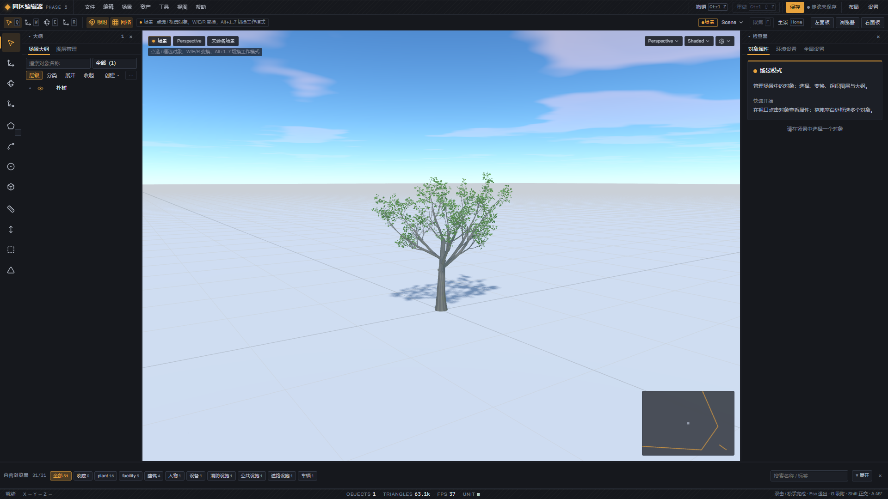
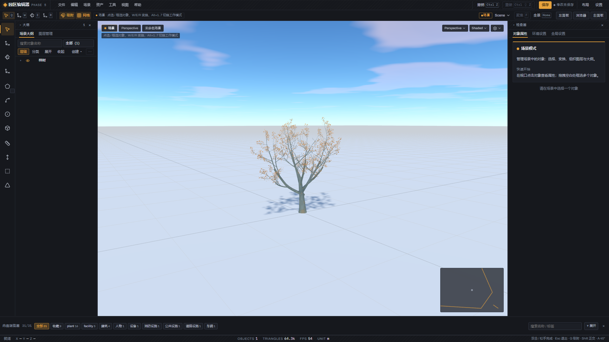
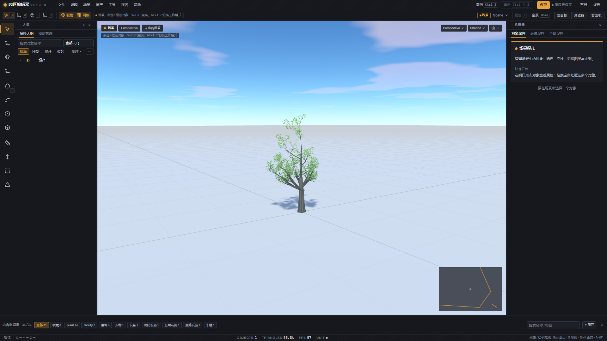
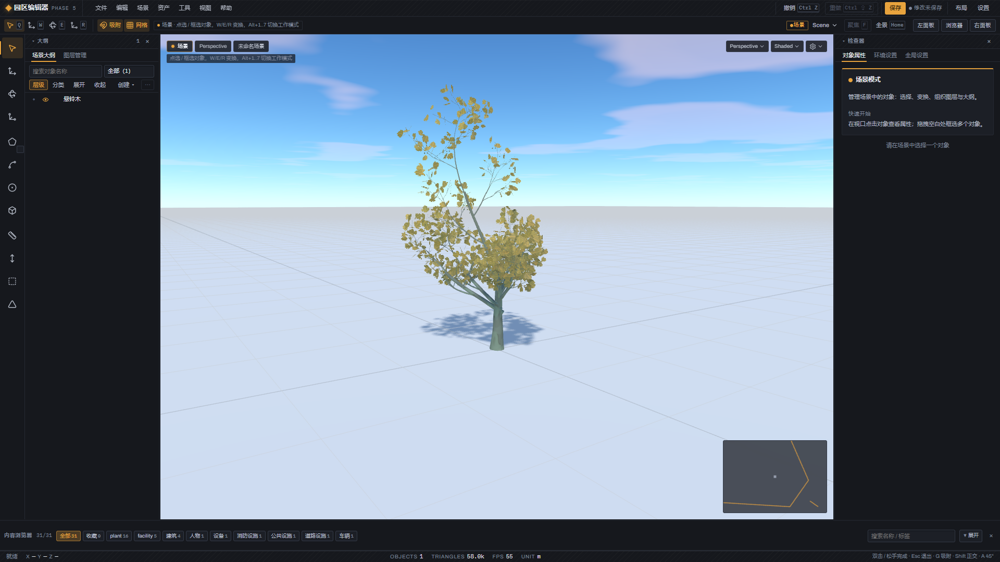
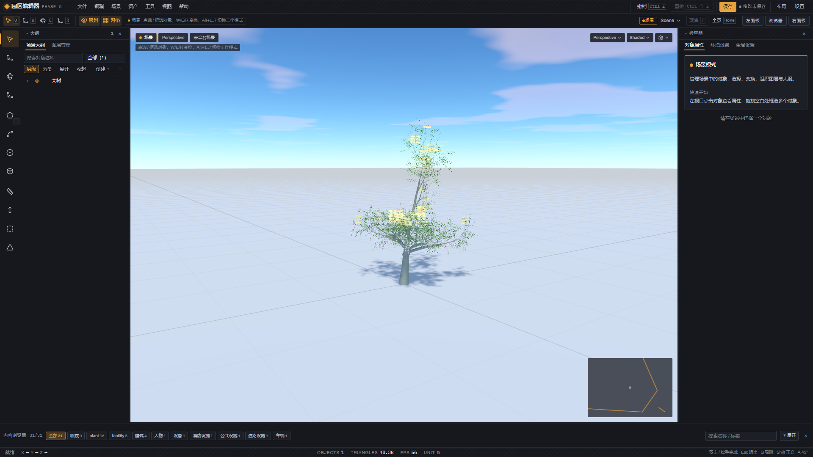
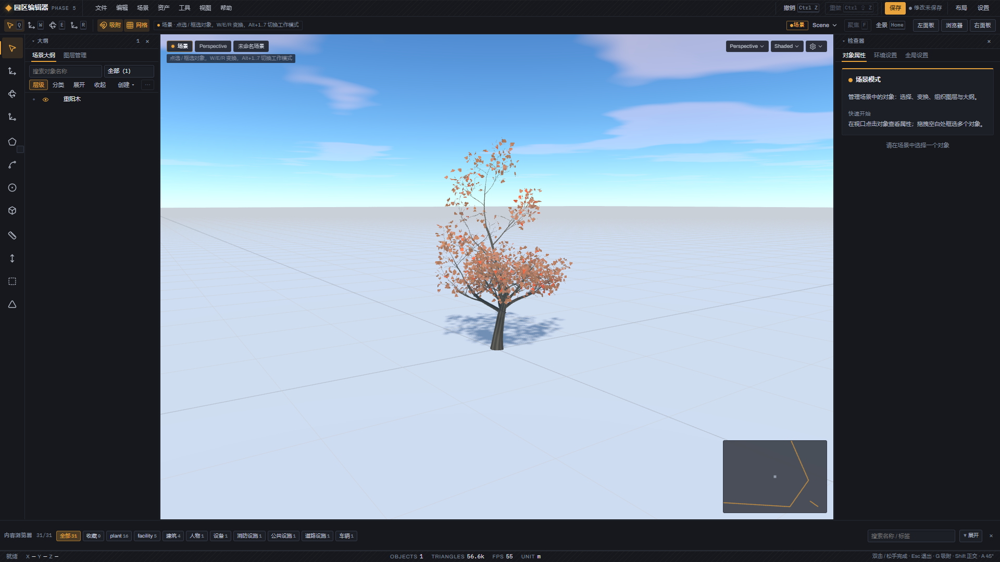
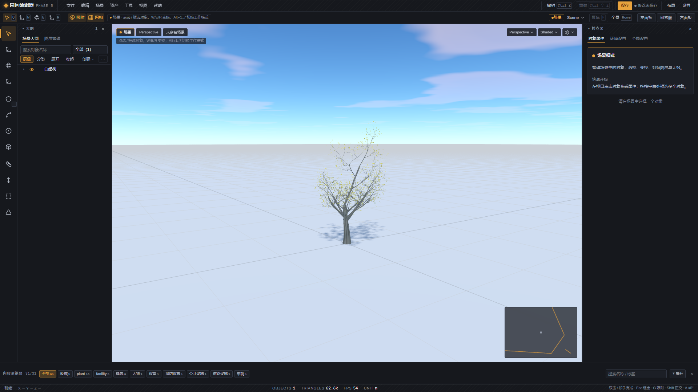
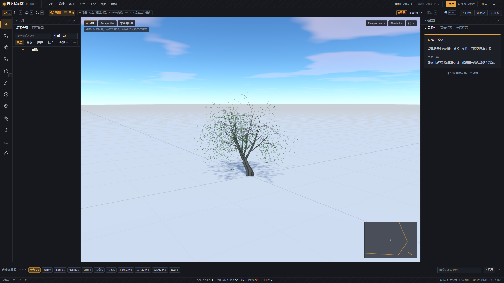
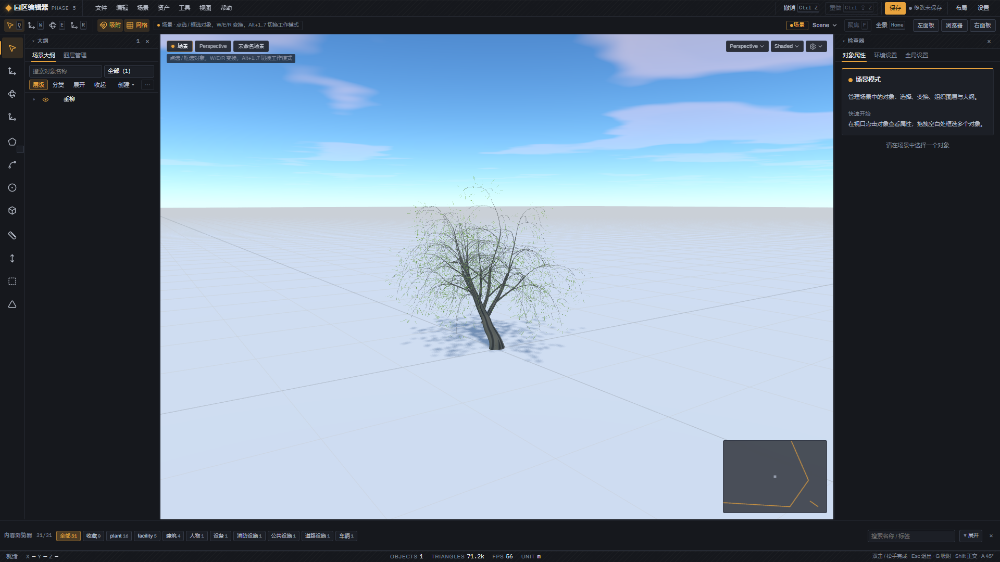

夏栎 tree3a · default夏栎 tree3a · autumn
朴 celtis · default
朴 celtis · autumn
樟 camphor · default樟 camphor · autumn无秋卡（常绿终态 / 不建卡记档）
榉 zelkova · default榉 zelkova · autumn
银杏 ginkgo · default
银杏 ginkgo · autumn
悬铃木 platanus · default悬铃木 platanus · autumn
栾 koelreuteria · default
栾 koelreuteria · autumn
乌桕 triadica · default乌桕 triadica · autumn
重阳木 bischofia · default重阳木 bischofia · autumn
国槐 sophora · default国槐 sophora · autumn
白蜡 fraxinus · default白蜡 fraxinus · autumn
女贞 ligustrum · default女贞 ligustrum · autumn无秋卡（常绿终态 / 不建卡记档）
垂柳 salix · default
垂柳 salix · autumn